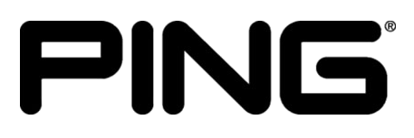

핑 Ping, Inc.
핑(Ping, Inc.)은 미국 애리조나주 피닉스에 본사를 둔 스포츠 장비 제조업체로, 골프채와 골프백을 생산하며 골프 장비에 중점을 둔다. 1959년 칼스텐 솔하임이 설립했다.
최종 업데이트

핑은 어떤 브랜드인가
핑은 골프채와 골프백을 생산하는 미국의 스포츠 장비 제조업체이다. 본사는 애리조나주 피닉스에 있으며 골프 장비에 중점을 둔다.
창업자 칼스텐 솔하임은 제너럴 일렉트릭 회사에서 엔지니어로 근무한 인물이다. 회사는 인베스트먼트 주조를 사용해 고품질 주조 클럽을 제공한 최초의 제조업체였고, 다양한 라이와 오프셋을 가진 클럽 헤드로 공장 피팅을 제공한 최초의 회사이기도 했다.
1980년경부터는 플레이어의 신체적 특성, 일반적인 문제, 거리 등에 대한 체크리스트를 기반으로 피팅 프로그램을 제공했다. 토니 피나우, 빅토르 호블란, 버바 왓슨 등 주요 투어 선수들과 후원 계약을 유지해 왔다.
핑은 어떻게 시작되고 성장했나
핑은 1959년 칼스텐 솔하임이 캘리포니아주 레드우드시티의 차고에서 퍼터를 만들기 시작하면서 출발했다. 제너럴 일렉트릭의 엔지니어였던 그는 차고에서 "핑 1A" 퍼터를 발명했고, 샤프트를 블레이드 뒤꿈치가 아닌 중앙에 부착했다.
1961년 가족과 함께 애리조나주 피닉스로 이사했고, 1966년에는 Anser 퍼터를 디자인했다. 1967년 제너럴 일렉트릭을 사임하고 사업을 차고에서 공장으로 옮겨 피닉스에 카스텐 매뉴팩처링 코퍼레이션(KMC)을 설립했다.
1969년에는 주변 가중치 원리에 기반한 아이언을 도입했다.
핑의 브랜드 아이덴티티는 무엇인가
골프채 설계에 과학적 원리를 적용해 클럽 헤드 무게를 주변으로 옮기고, 공장 피팅을 처음 제공한 점이 핑을 구분 짓는다.
핑의 대표 제품과 서비스는 무엇인가
핑은 골프채와 골프백을 생산한다. 첫 제품은 1959년 차고에서 만든 퍼터 "핑 1A"였고, 1966년에 디자인한 Anser 퍼터는 1967년 3월 21일 특허를 받았다.
Anser 퍼터는 1967년 초 줄리어스 보로스가 PGA 투어의 피닉스 오픈에서 사용해 우승하면서 인정을 받았다. 아이언으로는 1961년에 만든 첫 아이언 세트 "69", 1969년의 주변 가중치 아이언, 1960년대 마지막 주요 혁신이던 K1 스테인리스 주조 강철 아이언 세트가 있다.
피팅 서비스도 제공하며, 일부 아이언 클럽 헤드에는 작은 노치를 넣어 클럽 헤드 파손 위험 없이 필요한 사양으로 구부릴 수 있게 한다.
핑은 지금 어떤 상태인가
핑은 2011년 웹사이트의 체크리스트에 약 100개의 데이터 입력을 두었으며, 이는 드라이버부터 퍼터까지 다루는 5단계 피팅 프로세스의 일부였다. 토니 피나우, 빅토르 호블란, 루이 우스트하이젠, 사히스 테갈라, 버바 왓슨, 리 웨스트우드를 포함한 주요 투어 프로 골퍼들과 후원 계약을 유지해 왔다.
2018년 1월 10일에는 노르웨이 총리 에르나 솔베르그가 도널드 트럼프 대통령에게 핑 "베르겐" 퍼터를 선물로 증정했다.
핑 로고는 어떻게 변해왔나
자주 묻는 질문
핑는 어느 나라 브랜드인가요?
핑는 미국의 스포츠·아웃도어 브랜드입니다.
핑는 언제 설립되었나요?
핑는 1959년 설립되었습니다.
핑의 브랜드 아이덴티티는 무엇인가요?
골프채 설계에 과학적 원리를 적용해 클럽 헤드 무게를 주변으로 옮기고, 공장 피팅을 처음 제공한 점이 핑을 구분 짓는다.
핑의 대표 제품은 무엇인가요?
핑은 골프채와 골프백을 생산한다.
핑는 현재 어떤 상태인가요?
핑은 2011년 웹사이트의 체크리스트에 약 100개의 데이터 입력을 두었으며, 이는 드라이버부터 퍼터까지 다루는 5단계 피팅 프로세스의 일부였다.
핑의 창업자는 누구인가요?
핑의 창업자는 Karsten Solheim입니다(위키데이터 기준).
핑의 본사는 어디에 있나요?
핑의 본사는 피닉스에 있습니다(위키데이터 기준).
출처와 검증
핑 관련 참고: 공식 웹사이트 · 위키데이터 Q2095619 · 한국어 위키백과 · 영어 위키백과. 브랜드명은 한글과 원어를 함께 표기하되 데이터에 없는 표기는 만들지 않습니다. 기원 국가·설립연도는 검수된 정의문에서 확인된 값을 우선하고, 없을 때만 공식 웹사이트 URL이 일치하는 위키데이터 개체의 값을 씁니다. 웹 첫 보관은 인터넷 아카이브가 공식 사이트 첫 화면을 처음 보관한 날로, 사이트 개설일과 다를 수 있습니다. 위키데이터 값은 2026-11-07 기준입니다.